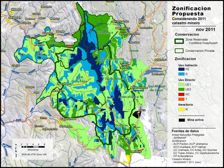
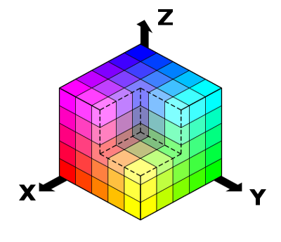
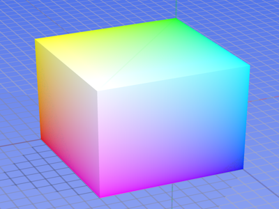
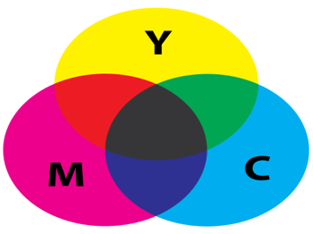
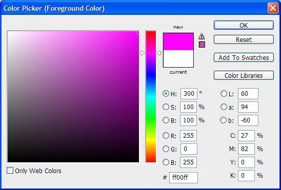

Data Management in the
Research Environment
Research Environment
RSM 674 Spring
Dr. Timothy Norris - Data Curation Fellow - tnorris@miami.edu
Angela Clark - Librarian Associate Professor RSMAS - aclark@rsmas.miami.edu
Angela Clark - Librarian Associate Professor RSMAS - aclark@rsmas.miami.edu
Todays Outline
- Reading review - Keywords at https://etherpad.net/p/Data_Management_Keywords
- Categorizing Data
- Data in the Research Data Lifecycle
Promoting the Stewardship of Research Data
- National Academy of the Sciences -
- Committee on Ensuring the Utility and Integrity of Research Data in a Digital Age
- Committee on Science, Engineering, and Public Policy
- Policy and Global Affairs
- Institute of Medicine
- Keywords??
- Value
- how does the value of data change over time?
- why is some data more valuable than others?
- what kinds of value are there?
Adapted from: Committee on Ensuring the Utility and Integrity of Research Data in a Digital Age (2009). “Promoting the Stewardship of Research Data” (Chap 4) in Ensuring the Integrity, Accessibility, and Stewardship of Research Data in the Digital Age. National Academies Press, Washington D.C.
http://www.nap.edu/catalog/12615/ensuring-the-integrity-accessibility-and-stewardship-of-research-data-in-the-digital-age
http://www.nap.edu/catalog/12615/ensuring-the-integrity-accessibility-and-stewardship-of-research-data-in-the-digital-age
Promoting the Stewardship of Research Data
- ICPSR: http://www.icpsr.umich.edu/icpsrweb/
- ESA - the National Ecological Data Center has not materialized to date, BUT
The Long Term Ecological Research Program (LTER) has made significant contributions through the National Ecological Observatory Network (NEON): http://www.neonscience.org/ - Arxiv: https://arxiv.org/
- NCEI: https://www.ncdc.noaa.gov/
formerly: National Climactic Data Center (NCDC)
Promoting the Stewardship of Research Data
"The question of who pays, how much, and for how long are at the heart of the problem of how to ensure long-term stewardship of research data." (p 113)
Wgsimon (2011), Licensed under CC BY-SA 3.0 via Commons
https://en.wikipedia.org/wiki/Moore's_law#/media/File:Transistor_Count_and_Moore%27s_Law_-_2011.svg
https://en.wikipedia.org/wiki/Moore's_law#/media/File:Transistor_Count_and_Moore%27s_Law_-_2011.svg
The 2013 OMB Memorandum
- Value – “manage information as an asset throughout its lifecycle”
- Privacy, security, ownership
- Data:
“refers to all structured information, unless otherwise noted.” - Information Life Cycle
“means the stages through which information passes, typically characterized as creation, collection processing, dissemination, use, storage, and disposition.”
The 2013 OMB Memorandum
- Open Data
- Public
- Accessible
- Described
- Reuseable
- Complete
- Timely
- Managed Post-Release
The 2013 OMB Memorandum
- Policy Requirements
- Collect information in a way that supports downstream use
- Machine readable formats
- Use data standards
- Open licenses
- Common core and extensible metadata
On Data
Qualitative - Quantitative
Non-numeric
Text, Image, Sound
Text, Image, Sound
Nominal, Ordinal, Interval, Ratio
Kitchin, R (2014). “Conceptualizing Data” in Kitchin, R The Data Revolution. Washington DC: Sage.
http://uk.sagepub.com/sites/default/files/upm-binaries/63923_Kitchin_CH1.pdf
http://uk.sagepub.com/sites/default/files/upm-binaries/63923_Kitchin_CH1.pdf
| Measurement Level | Definition | Example |
| Nominal | Categorical in nature, with observations recorded into discrete units. | Unmarried, married, divorced, widowed |
| Ordinal | Observations that are placed in a rank order, where certain observations are greater than others | Low, medium, high |
| Interval | Measurements along a scale which possesses a fixed but arbitrary interval and an arbitrary origin. Addition or multiplication by a constant will not alter the interval nature of the observations. Data can either be continuous or discrete in nature. | Temperature along the Celsius scale |
| Ratio | Similar to interval data except the scale possesses a true zero origin, and multiplication by a constant will not alter the ratio nature of the observations. | Exam marks on a scale of 0–10 |
Kitchin, R (2014). “Conceptualizing Data” in Kitchin, R The Data Revolution. Washington DC: Sage.
http://uk.sagepub.com/sites/default/files/upm-binaries/63923_Kitchin_CH1.pdf
http://uk.sagepub.com/sites/default/files/upm-binaries/63923_Kitchin_CH1.pdf
On Data
Qualitative - Quantitative
Non-numeric
Text, Image, Sound
Text, Image, Sound
Nominal, Ordinal, Interval, Ratio
Kitchin, R (2014). “Conceptualizing Data” in Kitchin, R The Data Revolution. Washington DC: Sage.
http://uk.sagepub.com/sites/default/files/upm-binaries/63923_Kitchin_CH1.pdf
http://uk.sagepub.com/sites/default/files/upm-binaries/63923_Kitchin_CH1.pdf
Captured, Exhaust, Transient, Derived
Observed
Experimental,
Modeled
Experimental,
Modeled
Modeled
Technical Metadata
Technical Metadata
Non-Observed
Not "Raw"
Levels (more in a moment)
Levels (more in a moment)
| Data Level | Description |
| Level 0 | Reconstructed, unprocessed instrument and payload data at full resolution, with any and all communications artefacts (e.g., synchronisation frames, communications headers, duplicate data) Removed. |
| Level 1a | Reconstructed, unprocessed instrument data at full resolution, time-referenced, and annotated with ancillary information, including radiometric and geometric calibration coefficients and georeferencing parameters computed and appended but not applied to Level 0 data. |
| Level 1b | Level 1A data that have been processed to sensor units |
| Level 2 | Derived geophysical variables at the same resolution and location as Level 1 source data. |
| Level 3 | Variables mapped on uniform space-time grid scales, usually with some completeness and consistency |
| Level 4 | Model output or results from analyses of lower-level data (e.g., variables derived from multiple measurements). |
| Active vs. Static: | Data Storage: | Example or Focus: | Typical File Formats: |
| ACTIVE | Raw Data: | Temperature readings over time | Paper? Device-specific? .xlsx, … |
| Processed Data: | “Cleaned,” normalized temperature data compiled in spreadsheet | .xlsx, .sas, … | |
| Analyzed Data: | Temperature data with averages computed, graphs charted | .xlsx, .sas, … | |
| STATIC | Finalized, Published Data: | Do the data support hypothesis? | .csv |
adapted from http://classguides.lib.uconn.edu/
On Data
Qualitative - Quantitative
Non-numeric
Text, Image, Sound
Text, Image, Sound
Nominal, Ordinal, Interval, Ratio
Kitchin, R (2014). “Conceptualizing Data” in Kitchin, R The Data Revolution. Washington DC: Sage.
http://uk.sagepub.com/sites/default/files/upm-binaries/63923_Kitchin_CH1.pdf
http://uk.sagepub.com/sites/default/files/upm-binaries/63923_Kitchin_CH1.pdf
Captured, Exhaust, Transient, Derived
Observed
Experimental,
Modeled
Experimental,
Modeled
Modeled
Technical Metadata
Technical Metadata
Non-Observed
Not "Raw"
Levels (more in a moment)
Levels (more in a moment)
Structured, Semi-structured, Unstructured
Irregular, Flexible
Nested, Trees, Tagged
Nested, Trees, Tagged
Data model, Schema,
Relational Database
Relational Database
Primary, Secondary, Tertiary
Incorporated
Re-used
Re-used
Created, Collected
Released
Truncated
Truncated
Data: Primary, Secondary, and Tertiary
- Primary: research generated (from instruments or observations)
- Secondary: acquired for research project from another source
- Tertiary: derivative of primary or secondary data (anonymized, annotated, bundled, and so on)
On Data
Qualitative - Quantitative
Non-numeric
Text, Image, Sound
Text, Image, Sound
Nominal, Ordinal, Interval, Ratio
Kitchin, R (2014). “Conceptualizing Data” in Kitchin, R The Data Revolution. Washington DC: Sage.
http://uk.sagepub.com/sites/default/files/upm-binaries/63923_Kitchin_CH1.pdf
http://uk.sagepub.com/sites/default/files/upm-binaries/63923_Kitchin_CH1.pdf
Captured, Exhaust, Transient, Derived
Observed
Experimental,
Modeled
Experimental,
Modeled
Modeled
Technical Metadata
Technical Metadata
Non-Observed
Not "Raw"
Levels (more in a moment)
Levels (more in a moment)
Structured, Semi-structured, Unstructured
Irregular, Flexible
Nested, Trees, Tagged
Nested, Trees, Tagged
Data model, Schema,
Relational Database
Relational Database
Primary, Secondary, Tertiary
Incorporated
Re-used
Re-used
Created, Collected
Released
Truncated
Truncated
Indexical, Attribute, Metadata
Identifiers
Descriptions
Characteristics
On Metadata
One persons data is another persons metadata
Some Useful Abstractions

“Information is not knowledge.
Knowledge is not wisdom.
Wisdom is not truth.
Truth is not beauty.
Beauty is not love.
Love is not music.
Music is THE BEST.”
― Frank Zappa
Another Way of Seeing
Framing Data
- Technical Perspective
- quality, validity, reliability, authenticity, and useability
- process, structure, share, analysis
- Ethical Perspective
- purpose and use
- Political - Economic Perspective
- public goods and private ownership
- governance
- Spatial - Temporal Perspective
- mutable mobiles ... (Latour)
- Philosophical Perspective
- ontologies and epistemologies
Kitchin, R (2014). “Conceptualizing Data” in Kitchin, R The Data Revolution. Washington DC: Sage.
http://uk.sagepub.com/sites/default/files/upm-binaries/63923_Kitchin_CH1.pdf
http://uk.sagepub.com/sites/default/files/upm-binaries/63923_Kitchin_CH1.pdf
What data will you collect / create / wrangle ?
- Will you use sensors? - OBSERVATIONAL
- Captured in situ?
- Can’t be recreated, recaptured or replaced - VALUE
- Includes survey instruments and hired research assistants
- But, will you collect data, buy data from a provider, or receive data as a contracted service?
What data will you collect / create / wrangle ?
- Will you conduct and experiment? - EXPERIMENTAL
- In situ or laboratory based (also considered are natural experiments)?
- Should be reproducuble, but can be expensive
- May include sensors and observations
What data will you collect / create / wrangle ?
- Will you build models? - SIMULATED
- Will you write code?
- How will you parametrize the model?
- Inouts may be more valuable than outputs
- What software (or other tools) will you use?
What data will you collect / create / wrangle ?
- Will you combine and analyze previously shared data to create new data? – DERIVED or COMPILED
- Integration from several sources
- Recreation can be very expensive
- Again, software and tools?
- Are there copyright concerns?
What data will you collect / create / wrangle ?
- Will you draw from previously published materials? – REFERENCE or CANONICAL
- Peer reviewed
- Can be data or textual
"This is the most creative, important and valuable aspect of research data."
- Do you agree?
- Write a paragraph on why or why not you agree with this statement

Reference / Canonical
Observational
Simulated
Compiled
Raw
Analyzed
Processed
Finalized / Published
Your Turn
- Think about your research project – if you don’t have one, partner with someone who does OR imagine your future internship
- DRAW your RESEARCH LIFE CYCLE
- Remember: before, during, after
- CONSIDER DATA as
- Qualitative and Quantitative
- observational, experimental, derived, simulated, refere
- raw, processed, analyzed, published
- primary, secondary, tertiary
- MATCH the STAGES of the research lifecycle with DATA TYPES
- Think about management/wrangling at each research stage with each data type
- DRAW your RESEARCH LIFE CYCLE
File Formats
“A file format is a standard way that information is encoded for storage in a computer file. It specifies how bits are used to encode information in a digital storage medium.” - Wikipedia
Data type
Qualitative, tabular
experimental data
experimental data
{
Possible formats
Excel spreadsheet (.xlsx)
Comma-delimited text (.csv)
Access database (.mdb/,accdb)
Google Spreadsheet
SPSS portable file (.por)
XML file
Comma-delimited text (.csv)
Access database (.mdb/,accdb)
Google Spreadsheet
SPSS portable file (.por)
XML file
Whitmire, Amanda L. (2014). Research Data Management Curriculum, Lecture 3: Introduction to Research Data Management. Oregon State University Libraries.
Retrieved 11/04/2015 from: http://figshare.com/articles/GRAD521_Research_Data_Management_Lectures/1003835
Retrieved 11/04/2015 from: http://figshare.com/articles/GRAD521_Research_Data_Management_Lectures/1003835
File Formats
Archive and compressed
Main article: List of archive formats
.cab — A cabinet (.cab) file is a library of compressed files stored as a single file. Cabinet files are used to organize installation files that are copied to the user's system.[1]
.?Q? — files compressed by the SQ program
7z — 7-Zip compressed file
AAC — Advanced Audio Coding
ace — ACE compressed file
ALZ — ALZip compressed file
APK — Applications installable on Android
AT3 — Sony's UMD Data compression
.bke — BackupEarth.com Data compression
ARC
ARJ — ARJ compressed file
ASS (also SAS) — a subtitles file created by Aegisub, a video typesetting application (Also a Halo game engine file)
B — (B file) Similar to .a, but a little less compressed...
BA — Scifer Archive (.ba), Scifer External Archive Type
big — Special file compression format used by Electronic Arts for compressing the data for many of EA's games
BIN — compressed Archive. can be read and used by cd-roms and java, Extractable by 7-zip and WINRAR
BKF (.bkf) — Microsoft backup created by NTBACKUP.c
bzip2 (.bz2) —
bld — Skyscraper Simulator Building
c4 — JEDMICS image files, a DOD system
cab — Microsoft Cabinet
cals — JEDMICS image files, a DOD system
CLIPFLAIR (.clipflair, .clipflair.zip) — ClipFlair Studio [1] component saved state file (contains component options in XML, extra/attached files and nested components' state in child .clipflair.zip files – activities are also components and can be nested at any depth)
CPT, SEA — Compact Pro (Macintosh)
DAA — Closed-format, Windows-only compressed disk image
deb — Debian install package
DMG — an Apple compressed/encrypted format
DDZ — a file which can only be used by the "daydreamer engine" created by "fever-dreamer", a program similar to RAGS, it's mainly used to make somewhat short games.
DPE — Package of AVE documents made with Aquafadas digital publishing tools.
.egg — Alzip Egg Edition compressed file
EGT (.egt) — EGT Universal Document also used to create compressed cabinet files replaces .ecab
ECAB (.ECAB, .ezip) — EGT Compressed Folder used in advanced systems to compress entire system folders, replaced by EGT Universal Document
ESS (.ess) — EGT SmartSense File, detects files compressed using the EGT compression system.
GHO (.gho, .ghs) — Norton Ghost
Graphics Interchange Format (.gif)
gzip (.gz) — Compressed file
IPG (.ipg) — Format in which Apple Inc. packages their iPod games. can be extracted through Winrar
jar — ZIP file with manifest for use with Java applications.
LBR (.Lawrence) — Lawrence Compiler Type file
LBR — Library file
LQR — LBR Library file compressed by the SQ program.
LHA (.lzh) — Lempel, Ziv, Huffman
lzip (.lz) — Compressed file
lzo
lzma
LZX (algorithm)
MBRWizard archive (.mbw)
Mc.META files (Mc.META) Used in Minecraft Resource Packs
MPQ Archives (.mpq) — Used by Blizzard games
BIN (.bin) — MacBinary
NTH (.nth) — Nokia Theme Used by Nokia Series 40 Cellphones
OSZ — Osu! compressed beatmap archive
PAK — Enhanced type of .ARC archive
PAR (.par, .par2) — Parchive
PAF (.paf) — Portable Application File
PYK (.pyk) — Compressed File
PK3 (.pk3) — Quake 3 archive (See note on Doom³)
PK4 (.pk4) — Doom³ archive (Opens similarly to a zip archive.)
RAR (.rar) — Rar Archive, for multiple file archive (rar to .r01-.r99 to s01 and so on)
RAG, RAGS — Game file, a game playable in the RAGS game-engine, a free program which both allows people to create games, and play games, games created have the file format "RAG game file"
RPM — Red Hat package/installer for Fedora, RHEL, and similar systems.
SEN — Scifer Archive (.sen) — Scifer Internal Archive Type
SIT (.sitx) — StuffIt (Macintosh)
SKB — Google Sketchup Backup File
SZS — Nintendo U8 archive
TAR — group of files, packaged as one file
TGZ (.tar.gz) — gzipped tar file
TB (.tb) — Tabbery Virtual Desktop Tab file
TIB (.tib) — Acronis True Image backup
UHA — Ultra High Archive Compression
UUE (.uue) — unified utility engine — the generic and default format for all things UUe-related.
VIV — Archive format used to compress data for several video games, including Need For Speed: High Stakes.
VOL — unknown archive
VSA — Altiris Virtual Software Archive
WAX — Wavexpress — A ZIP alternative optimized for packages containing video, allowing multiple packaged files to be all-or-none delivered with near-instantaneous unpacking via NTFS file system manipulation.
Z — Unix compress file
zoo — based on LZW
zip — popular compression format
Physical recordable media archiving
ISO — The generic file format for most optical media, including CD-ROM, DVD-ROM, Blu-ray Disc, HD DVD and UMD.
NRG — The proprietary optical media archive format used by Nero applications.
IMG — For archiving MS-DOS formatted floppy disks, larger optical media and Hard Disk Drives.
ADF — Amiga Disk Format, for archiving Amiga floppy disks
ADZ — The GZip-compressed version of ADF.
DMS — Disk Masher System, a disk-archiving system native to the Amiga.
DSK — For archiving floppy disks from a number of other platforms, including the ZX Spectrum and Amstrad CPC.
D64 — An archive of a Commodore 64 floppy disk.
SDI — System Deployment Image, used for archiving and providing "virtual disk" functionality.
MDS — DAEMON tools native disc image file format used for making images from optical CD-ROM, DVD-ROM, HD DVD or Blu-ray Disc. It comes together with MDF file and can be mounted with DAEMON Tools.
MDX — New DAEMON Tools file format that allows to get one MDX disc image file instead of two (MDF and MDS).
DMG — Macintosh disk image files
(MPEG-1 is found in a .DAT file on a video CD.)
CDI — DiscJuggler image file
CUE — CDRWrite CUE image file
CIF — Easy CD Creator .cif format
C2D — Roxio / WinOnCD .c2d format
DAA — PowerISO .daa format
B6T — BlindWrite 5/6 image file
Computer-aided Design
Computer-aided is a prefix for several categories of tools (e.g., design, manufacture, engineering) which assist professionals in their respective fields (e.g., machining, architecture, schematics).
Computer-aided design (CAD)
Computer-aided design (CAD) software assists engineers, architects and other design professionals in project design.
3dxml — Dassault Systemes graphic representation
3MF — Microsoft 3D Manufacturing Format[2]
ACP — VA Software VA — Virtual Architecture CAD file
AMF — Additive Manufacturing File Format
AEC — DataCAD drawing format[3]
AR — Ashlar-Vellum Argon — 3D Modeling
ART — ArtCAM model
ASC — BRL-CAD Geometry File (old ASCII format)
ASM — Solidedge Assembly, Pro/ENGINEER Assembly
BIN, BIM — Data Design System DDS-CAD
BREP — Open CASCADE 3D model (shape)
CCC — CopyCAD Curves
CCM — CopyCAD Model
CCS — CopyCAD Session
CAD — CadStd
CATDrawing — CATIA V5 Drawing document
CATPart — CATIA V5 Part document
CATProduct — CATIA V5 Assembly document
CATProcess — CATIA V5 Manufacturing document
cgr — CATIA V5 graphic representation file
ckd — KeyCreator CAD Modeling
ckt — KeyCreator CAD Modeling
CO — Ashlar-Vellum Cobalt — parametric drafting and 3D modeling
DRW — Caddie Early version of Caddie drawing — Prior to Caddie changing to DWG
DFT — Solidedge Draft
DGN — MicroStation design file
DGK — Delcam Geometry
DMT — Delcam Machining Triangles
DXF — ASCII Drawing Interchange file format — AutoCAD
DWB — VariCAD drawing file
DWF — Autodesk's Web Design Format; AutoCAD & Revit can publish to this format; similar in concept to PDF files; Autodesk Design Review is the reader
DWG — AutoCAD and Open Design Alliance applications, Autodesk Inventor Drawing file
EASM — SolidWorks eDrawings assembly file
EDRW — eDrawings drawing file
EMB — Wilcom ES Designer Embroidery CAD file
EPRT — eDrawings part file
EscPcb - "esCAD pcb" EsCAD.pngEsCAD pcb.png data file by Electro-System Japan.pngElectro-System (Japan)
EscSch - "esCAD sch" EsCAD.pngEsCAD sch.png data file by Electro-System Japan.pngElectro-System (Japan)
ESW — AGTEK format
EXCELLON — Excellon file
EXP — Drawing Express file format
F3D — Autodesk Fusion 360 project file
FM — FeatureCAM Part File
FMZ — FormZ Project file
G — BRL-CAD Geometry File
GBR — Gerber file
GLM — KernelCAD model
GRB — T-FLEX CAD File
GTC — GRAITEC Advance file format
IAM — Autodesk Inventor Assembly file
ICD — IronCAD 2D CAD file
IDW — Autodesk Inventor Drawing file
IFC — buildingSMART for sharing AEC and FM data
IGES — Initial Graphics Exchange Specification
Intergraph's Intergraph Standard File Formats
IPN — Autodesk Inventor Presentation file
IPT — Autodesk Inventor Part file
JT — Jupiter Tesselation
MCD — Monu-CAD (Monument/Headstone Drawing file)
model — CATIA V4 part document
OCD — Orienteering Computer Aided Design (OCAD) file
PAR — Solidedge Part
PIPE — PIPE-FLO Professional Piping system design file
PLN — ArchiCad project
PRT — NX (recently known as Unigraphics), Pro/ENGINEER Part, CADKEY Part
PSM — Solidedge Sheet
PSMODEL — PowerSHAPE Model
PWI — PowerINSPECT File
PYT — Pythagoras File
SKP — SketchUp Model
RLF — ArtCAM Relief
RVM - AVEVA PDMS 3D Review model
RVT — Autodesk Revit project files
RFA — Autodesk Revit family files
S12 — Spirit file, by Softtech
SCAD — OpenSCAD 3D part model
SCDOC — SpaceClaim 3D Part/Assembly
SLDASM — SolidWorks Assembly drawing
SLDDRW — SolidWorks 2D drawing
SLDPRT — SolidWorks 3D part model
Softimage's dotXSI
STEP — Standard for the Exchange of Product model data
STL — Stereo Lithographic data format used by various CAD systems and stereo lithographic printing machines.
TCT — TurboCAD drawing template
TCW — TurboCAD for Windows 2D and 3D drawing
UNV — I-DEAS I-DEAS (Integrated Design and Engineering Analysis Software)
VC6 — Ashlar-Vellum Graphite — 2D and 3D drafting
VLM — Ashlar-Vellum Vellum, Vellum 2D, Vellum Draft, Vellum 3D, DrawingBoard
VS — Ashlar-Vellum Vellum Solids
WRL — Similar to STL, but includes color. Used by various CAD systems and 3D printing rapid prototyping machines. Also used for VRML models on the web.
X_B — Parasolids binary format.
X_T — Parasolids
XE — Ashlar-Vellum Xenon — for Associative 3D Modeling
Electronic design automation (EDA)
Electronic design automation (EDA), or electronic computer-aided design (ECAD), is specific to the field of electrical engineering.
BRD — Board file for EAGLE Layout Editor, a commercial PCB design tool
BSDL — Description language for testing through JTAG
CDL — Transistor-level netlist format for IC design
CPF — Power-domain specification in SoC implementation (see also UPF)
DEF — Gate-level layout
DSPF — Detailed Standard Parasitic Format, Analog-level parasitics of interconnections in IC design
EDIF — Vendor neutral gate-level netlist format
FSDB — Analog waveform format (see also Waveform viewer)
GDSII — Format for PCB and layout of integrated circuits
HEX — ASCII-coded binary format for memory dumps
LEF — Library Exchange Format, physical abstract of cells for IC design
LIB — Library modeling (function, timing) format
MS12 — NI Multisim file
OASIS — Open Artwork System Interchange Standard
OpenAccess — Design database format with APIs
SDC — Synopsys Design Constraints, format for synthesis constraints
SDF — Standard for gate-level timings
SPEF — Standard format for parasitics of interconnections in IC design
SPI, CIR — SPICE Netlist, device-level netlist and commands for simulation
SREC, S19 — S-record, ASCII-coded format for memory dumps
STIL — Standard Test Interface Language, IEEE1450-1999 standard for Test Patterns for IC
SV — SystemVerilog source file
S*P — Touchstone/EEsof Scattering parameter data file — multi-port blackbox performance, measurement or simulated
UPF — Standard for Power-domain specification in SoC implementation
V — Verilog source file
VCD — Standard format for digital simulation waveform
VHD, VHDL — VHDL source file
WGL — Waveform Generation Language, format for Test Patterns for IC
Test technology
Files output from Automatic Test Equipment or post-processed from such.
Standard Test Data Format
Database
4DB — 4D database Structure file
4DD — 4D database Data file
4DIndy — 4D database Structure Index file
4DIndx — 4D database Data Index file
4DR — 4D database Data resource file (in old 4D versions)
ACCDB — Microsoft Database (Microsoft Office Access 2007 and later)
ACCDE — Compiled Microsoft Database (Microsoft Office Access 2007 and later)
ADT — Sybase Advantage Database Server (ADS)
APR — Lotus Approach data entry & reports
BOX — Lotus Notes Post Office mail routing database
CHML — Krasbit Technologies Encrypted database file for 1 click integration between contact management software and the chameleon(tm) line of imaging workflow solutions
DAF — Digital Anchor data file
DAT — DOS Basic
DAT — Intersystems Caché database file
DB — Paradox
DB — SQLite
DBF — db/dbase II,III,IV and V, Clipper, Harbour/xHarbour, Fox/FoxPro, Oracle
EGT — EGT Universal Document, used to compress sql databases to smaller files, may contain original EGT database style.
ESS — EGT SmartSense is a database of files and its compression style. Specific to EGT SmartSense
EAP — Enterprise Architect Project
FDB — Firebird Databases
FDB — Navision database file
FP, FP3, FP5, and FP7 — FileMaker Pro
FRM — MySQL table definition
GDB — Borland InterBase Databases
GTABLE — Google Drive Fusion Table
KEXI — Kexi database file (SQLite-based)
KEXIC — shortcut to a database connection for a Kexi databases on a server
KEXIS — shortcut to a Kexi database
LDB — Temporary database file, only existing when database is open
MDA — Add-in file for Microsoft Access
MDB — Microsoft Access database
ADP — Microsoft Access project (used for accessing databases on a server)
MDE — Compiled Microsoft Database (Access)
MDF — Microsoft SQL Server Database
MYD — MySQL MyISAM table data
MYI — MySQL MyISAM table index
NCF — Lotus Notes configuration file
NSF — Lotus Notes database
NTF — Lotus Notes database design template
NV2 — QW Page NewViews object oriented accounting database
ODB — LibreOffice Base or OpenOffice Base database
ORA — Oracle tablespace files sometimes get this extension (also used for configuration files)
PCONTACT — WinIM Contact file
PDB — Palm OS Database
PDI — Portable Database Image
PDX — Corel Paradox database management
PRC — Palm OS resource database
SQL — bundled SQL queries
REC — GNU recutils database
REL — Sage Retrieve 4GL data file
RIN — Sage Retrieve 4GL index file
SDB — StarOffice's StarBase
SDF — SQL Compact Database file
sqlite — SQLite
UDL — Universal Data Link
waData — Wakanda (software) database Data file
waIndx — Wakanda (software) database Index file
waModel — Wakanda (software) database Model file
waJournal — Wakanda (software) database Journal file
WDB — Microsoft Works Database
WMDB — Windows Media Database file — The CurrentDatabase_360.wmdb file can contain file name, file properties, music, video, photo and playlist information.
Desktop publishing
AI — Adobe Illustrator
AVE / ZAVE — Aquafadas
CDR — CorelDRAW
CHP / pub / STY / CAP / CIF / VGR / FRM — Ventura Publisher — Xerox (DOS / GEM)
CPT — Corel Photo-Paint
DTP — Greenstreet Publisher, GST PressWorks
GDRAW — Google Drive Drawing
ILDOC — Broadvision Quicksilver document
INDD — Adobe InDesign
PSD — Adobe Photoshop
MCF — FotoInsight Designer
PDF — Adobe Acrobat or Adobe Reader
PMD — Adobe PageMaker
PPP — Serif PagePlus
PUB — Microsoft Publisher
QXD — QuarkXPress
FM — Adobe FrameMaker
SLA / SCD — Scribus
WLMP — Windows Live Movie Maker project file
Document
These files store formatted text and plain text.
0 — Plain Text Document, Normally used for licensing
1ST — Plain Text Document, Normally preceded by the words "README" (README.1ST)
600 — Plain Text Document, Used in UNZIP history log
602 — Text602 document
ABW — AbiWord Document
ACL — MS Word AutoCorrect List
AFP — Advanced Function Presentation — IBc
AMI — Lostus Ami Pro
Amigaguide
ANS — American National Standards Institute (ANSI) text
ASC — ASCII text
AWW — Ability Write
CCF — Color Chat 1.0
CSV — ASCII text as comma-separated values, used in spreadsheets and database management systems
CWK — ClarisWorks / AppleWorks document
DBK — DocBook XML sub-format
DOC — Microsoft Word document
DOCM — Microsoft Word macro-enabled document
DOCX — Office Open XML document
DOT — Microsoft Word document template
DOTX — Office Open XML text document template
EGT — EGT Universal Document
EPUB — EPUB open standard for e-books
EZW — Reagency Systems easyOFFER document[4]
FDX — Final Draft
FTM — Fielded Text Meta
FTX — Fielded Text (Declared)
GDOC — Google Drive Document
HTML — HyperText Markup Language (.html, .htm)
HWP — Haansoft (Hancom) Hangul Word Processor document
HWPML — Haansoft (Hancom) Hangul Word Processor Markup Language document
LOG — Text log file
LWP — Lotus Word Pro
MBP — metadata for Mobipocket documents
MD — Markdown text document
ME — Plain text document normally preceded by the word "READ" (READ.ME)
MCW — Microsoft Word for Macintosh (versions 4.0–5.1)
Mobi — Mobipocket documents
NB — Mathematica Notebook
NBP — Mathematica Player Notebook
NEIS - 학교생활기록부 작성 프로그램(Student Record Writing Program) Document
ODM — OpenDocument master document
ODT — OpenDocument text document
OTT — OpenDocument text document template
OMM — OmmWriter text document
PAGES — Apple Pages document
PAP — Papyrus word processor document
PDAX — Portable Document Archive (PDA) document index file
PDF — Portable Document Format
QUOX — Question Object File Format for Quobject Designer or Quobject Explorer
Radix-64
RTF — Rich Text document
RPT — Crystal Reports
SDW — StarWriter text document, used in earlier versions of StarOffice
SE — Shuttle Document
STW — OpenOffice.org XML (obsolete) text document template
Sxw — OpenOffice.org XML (obsolete) text document
TeX — TeX
INFO — Texinfo
Troff
TXT — ASCII nebo Unicode plaintext Text file
UOF — Uniform Office Format
UOML — Unique Object Markup Language
VIA — Revoware VIA Document Project File
WPD — WordPerfect document
WPS — Microsoft Works document
WPT — Microsoft Works document template
WRD — WordIt! document
WRF — ThinkFree Write
WRI — Microsoft Write document
XHTML (xhtml, XHT..) — eXtensible Hyper-Text Markup Language
XML — eXtensible Markup Language
XPS — Open XML Paper Specification
Financial records
MYO — MYOB Limited (Windows) File
MYOB — MYOB Limited (Mac) File
TAX — TurboTax File
YNAB — You Need a Budget (YNAB) File
Financial data transfer formats
Interactive Financial Exchange (IFX) — XML-based specification for various forms of financial transactions
Open Financial Exchange (.ofx) — open standard supported by CheckFree and Microsoft and partially by Intuit; SGML and later XML based
QFX — proprietary pay-only file format used only by Intuit
Quicken Interchange Format (.qif) — open standard formerly supported by Intuit
Font file
ABF — Adobe Binary Screen Font
AFM — Adobe Font Metrics
BDF — Bitmap Distribution Format
BMF — ByteMap Font Format
FNT — Bitmapped Font — Graphics Environment Manager (GEM)
FON — Bitmapped Font — Microsoft Windows
MGF — MicroGrafx Font
OTF — OpenType Font
PCF — Portable Compiled Format
PostScript Font — Type 1, Type 2
PFA — Printer Font ASCII
PFB — Printer Font Binary — Adobe
PFM — Printer Font Metrics — Adobe
AFM — Adobe Font Metrics
FOND — Font Description resource — Mac OS
SFD — FontForge spline font database Font
SNF — Server Normal Format
TDF — TheDraw Font
TFM — TeX font metric
TTF (.ttf, .ttc) — TrueType Font
WOFF — Web Open Font Format
Geographic information system
ASC — ASCII point of interest (POI) text file
APR — ESRI ArcView 3.3 and earlier project file
DEM — USGS DEM file format
E00 — ARC/INFO interchange file format
GeoJSON —Geographically located data in object notation
GeoTIFF — Geographically located raster data
GML — Geography Markup Language file[5]
GPX — XML-based interchange format
ITN - TomTom Itinerary format
MXD — ESRI ArcGIS project file, 8.0 and higher
NTF — National Transfer Format file
OV2 — TomTom POI overlay file
SHP — ESRI shapefile
TAB — MapInfo Table file format
World TIFF — Geographically located raster data: text file giving corner coordinate, raster cells per unit, and rotation
DTED — Digital Terrain Elevation Data
KML — Keyhole Markup Language, XML-based
Graphical information organizers
3DT — 3D Topicscape The database in which the meta-data of a 3D Topicscape is held. A 3D Topicscape is a form of 3D concept map (like a 3D mind-map) used to organize ideas, information and computer files.
ATY — 3D Topicscape file, produced when an association type is exported by 3D Topicscape. Used to permit round-trip (export Topicscape, change files and folders as desired, re-import them to 3D Topicscape).
CAG — Linear Reference System.
FES — 3D Topicscape file, produced when a fileless occurrence in 3D Topicscape is exported to Windows. Used to permit round-trip (export Topicscape, change files and folders as desired, re-import them to 3D Topicscape).
MGMF — MindGenius Mind Mapping Software file format.
MM — FreeMind mind map file (XML).
MMP — Mind Manager mind map file.
TPC — 3D Topicscape file, produced when an inter-Topicscape topic link file is exported to Windows. Used to permit round-trip (export Topicscape, change files and folders as desired, re-import them to 3D Topicscape).
Graphics
Main article: image file formats
Color palettes
ACT — Adobe Color Table. Contains a raw color palette and consists of 256 24-bit RGB colour values.
GPL — GIMP palette file
PAL — Microsoft palette file
Color management
ICC/ICM — Color profile conforming the specification of the ICC.
Raster graphics
Raster (or Bitmap) files store images as a group of pixels.
ASE — Adobe Swatch
ART — America Online proprietary format
BLP — Blizzard Entertainment proprietary texture format
BMP — Microsoft Windows Bitmap formatted image
BTI — Nintendo proprietary texture format
CD5 — Chasys Draw IES image
CIT — Intergraph is a monochrome bitmap format
CPT — Corel PHOTO-PAINT image
CR2 — Canon camera raw format. Photos will have this format on some Canon cameras if the quality "RAW" is selected in camera settings.
CUT — Dr. Halo image file
DDS — DirectX texture file
DIB — Device-Independent Bitmap graphic
DjVu — DjVu for scanned documents
EGT — EGT Universal Document, used in EGT SmartSense to compress PNG files to yet a smaller file
Exif — Exchangeable image file format (Exif) is a specification for the image file format used by digital cameras
GIF — CompuServe's Graphics Interchange Format
GPL — GIMP Palette, using a textual representation of color names and RGB values
GRF — Zebra Technologies proprietary format
ICNS — file format use for icons in macOS. Contains bitmap images at multiple resolutions and bitdepths with alpha channel.
ICO — a file format used for icons in Microsoft Windows. Contains small bitmap images at multiple resolutions and sizes.
IFF (.iff, .ilbm, .lbm) — ILBM
JNG — a single-frame MNG using JPEG compression and possibly an alpha channel.
JPEG, JFIF (.jpg or .jpeg) — Joint Photographic Experts Group — a lossy image format widely used to display photographic images.
JP2 — JPEG2000
JPS — JPEG Stereo
LBM — Deluxe Paint image file
MAX — ScanSoft PaperPort document
MIFF — ImageMagick's native file format
MNG — Multiple Network Graphics, the animated version of PNG
MSP — a file format used by old versions of Microsoft Paint. Replaced with BMP in Microsoft Windows 3.0
NITF — A U.S. Government standard commonly used in Intelligence systems
OTB - Over The Air bitmap, a specification designed by Nokia for black and white images for mobile phones
PBM — Portable bitmap
PC1 — Low resolution, compressed Degas picture file
PC2 — Medium resolution, compressed Degas picture file
PC3 — High resolution, compressed Degas picture file
PCF — Pixel Coordination Format
PCX — a lossless format used by ZSoft's PC Paint, popular at one time on DOS systems.
PDN — Paint.NET image file
PGM — Portable graymap
PI1 — Low resolution, uncompressed Degas picture file
PI2 — Medium resolution, uncompressed Degas picture file. Also Portrait Innovations encrypted image format.
PI3 — High resolution, uncompressed Degas picture file
PICT, PCT — Apple Macintosh PICT image
PNG — Portable Network Graphic (lossless, recommended for display and edition of graphic images)
PNM — Portable anymap graphic bitmap image
PNS — PNG Stereo
PPM — Portable Pixmap (Pixel Map) image
PSB — Adobe Photoshop Big image file (for large files)
PSD, PDD — Adobe Photoshop Drawing
PSP — Paint Shop Pro image
PX — Pixel image editor image file
PXM — Pixelmator image file
PXR — Pixar Image Computer image file
QFX — QuickLink Fax image
RAW — General term for minimally processed image data (acquired by a digital camera)
RLE — a run-length encoded image
SCT — Scitex Continuous Tone image file
SGI, RGB, INT, BW — Silicon Graphics Image
TGA (.tga, .targa, .icb, .vda, .vst, .pix) — Truevision TGA (Targa) image
TIFF (.tif or .tiff) — Tagged Image File Format (usually lossless, but many variants exist, including lossy ones)
TIFF/EP (.tif or .tiff) — ISO 12234-2; tends to be used as a basis for other formats rather than in its own right.
VTF — Valve Texture Format
XBM — X Window System Bitmap
XCF — GIMP image (from Gimp's origin at the eXperimental Computing Facility of the University of California)
XPM — X Window System Pixmap
ZIF — Zoomable/Zoomify Image Format (a web-friendly, TIFF-based, zoomable image format)
Vector graphics
Vector graphics use geometric primitives such as points, lines, curves, and polygons to represent images.
3DV — 3-D wireframe graphics by Oscar Garcia
AMF — Additive Manufacturing File Format
AWG — Ability Draw
AI — Adobe Illustrator Document
CGM — Computer Graphics Metafile, an ISO Standard
CDR — CorelDRAW Document
CMX — CorelDRAW vector image
DXF — ASCII Drawing Interchange file Format, used in AutoCAD and other CAD-programs
E2D — 2-dimensional vector graphics used by the editor which is included in JFire
EGT — EGT Universal Document, EGT Vector Draw images are used to draw vector to a website
EPS — Encapsulated Postscript
FS — FlexiPro file
GBR — Gerber file
ODG — OpenDocument Drawing
MOVIE.BYU
RenderMan
SVG — Scalable Vector Graphics, employs XML
Scene description languages (3D vector image formats)
STL — Stereo Lithographic data format (see STL (file format)) used by various CAD systems and stereo lithographic printing machines. See above.
VRML Uses .wrl extension — Virtual Reality Modeling Language, for the creation of 3D viewable web images.
X3D
SXD — OpenOffice.org XML (obsolete) Drawing
V2D — voucher design used by the voucher management included in JFire
VDOC — Vector file format used in AnyCut, CutStorm, DrawCut, DragonCut, FutureDRAW, MasterCut, SignMaster, VinylMaster software by Future Corporation
VSD - Vector file format used by Microsoft Visio
VSDX - Vector file format used by MS Visio and opened by VSDX Annotator
VND — Vision numeric Drawing file used in TypeEdit, Gravostyle.
WMF — Windows Meta File
EMF — Enhanced (Windows) MetaFile, an extension to WMF
ART — Xara — Drawing (superseded by XAR)
XAR — Xara — Drawing
3D graphics
3D graphics are 3D models that allow building models in real-time or non real-time 3D rendering.
3DMF — QuickDraw 3D Metafile (.3dmf)
3DM — OpenNURBS Initiative 3D Model (used by Rhinoceros 3D) (.3dm)
3MF — Microsoft 3D Manufacturing Format (.3mf)[2]
3DS — Legacy 3D Studio Model (.3ds)
ABC — Alembic (computer graphics)
AC — AC3D Model (.ac)
AMF — Additive Manufacturing File Format
AN8 — Anim8or Model (.an8)
AOI — Art of Illusion Model (.aoi)
ASM – PTC Creo assembly (.asm)
B3D — Blitz3D Model (.b3d)
BLEND — Blender (.blend)
BLOCK — Blender encrypted blend files (.block)
BMD3 — Nintendo GameCube first-party proprietary model format (.bmd)
BDL (BMD4) — Nintendo Wii first-party proprietary model format 2006 - 2010 (.bdl)
BRRES — Nintendo Wii first-party proprietary model format 2010+ (.brres)
C4D — Cinema 4D (.c4d)
Cal3D — Cal3D (.cal3d)
CCP4 — X-ray crystallography voxels (electron density)
CFL — Compressed File Library (.cfl)
COB — Caligari Object (.cob)
CORE3D — Coreona 3D Coreona 3D Virtual File(.core3d)
CTM — OpenCTM (.ctm)
DAE — COLLADA (.dae)
DFF — RenderWare binary stream, commonly used by Grand Theft Auto III-era games as well as other RenderWare titles
DPM — deepMesh (.dpm)
DTS — Torque Game Engine (.dts)
EGG — Panda3D Engine
FACT — Electric Image (.fac)
FBX — Autodesk FBX (.fbx)
G — BRL-CAD geometry (.g)
GLM — Ghoul Mesh (.glm)
IOB - Imagine (3D modeling software) (.iob)
JAS — Cheetah 3D file (.jas)
LWO — Lightwave Object (.lwo)
LWS — Lightwave Scene (.lws)
LXO — Luxology Modo (software) file (.lxo)
MA — Autodesk Maya ASCII File (.ma)
MAX — Autodesk 3D Studio Max file (.max)
MB — Autodesk Maya Binary File (.mb)
MD2 — Quake 2 model format (.md2)
MD3 — Quake 3 model format (.md3)
MD5 — Doom 3 model format (.md5)
MDX — Blizzard Entertainment's own model format (.mdx)
MESH — New York University(.m)
MESH — Meshwork Model (.mesh)
MM3D — Misfit Model 3d (.mm3d)
MPO — Multi-Picture Object — This JPEG standard is used for 3d images, as with the Nintendo 3DS
MRC — voxels in cryo-electron microscopy
NIF — Gamebryo NetImmerse File (.nif)
OBJ — Wavefront .obj file (.obj)
OFF — OFF Object file format (.off)
OGEX — Open Game Engine Exchange (OpenGEX) format (.ogex)
PLY — Polygon File Format / Stanford Triangle Format (.ply)
PRC — Adobe PRC (embedded in PDF files)
PRT – PTC Creo part (.prt)
POV — POV-Ray document (.pov)
R3D - Realsoft 3D (Real-3D) (.r3d)
RWX — RenderWare Object (.rwx)
SIA — Nevercenter Silo Object (.sia)
SIB — Nevercenter Silo Object (.sib)
SKP — Google Sketchup file (.skp)
SLDASM — SolidWorks Assembly Document (.sldasm)
SLDPRT — SolidWorks Part Document (.sldprt)
SMD — Valve Studiomdl Data format. (.smd)
U3D — Universal 3D file format (.u3d)
VIM — Revizto visual information model format (.vimproj)
VRML97 — VRML Virtual reality modeling language (.wrl)
VUE — Vue scene file (.vue)
VWX — Vectorworks (.vwx)
WINGS — Wings3D (.wings)
W3D — Westwood 3D Model (.w3d)
X — DirectX 3D Model (.x)
X3D — Extensible 3D (.x3d)
Z3D — Zmodeler (.z3d)
Links and shortcuts
Alias (Mac OS)
JNLP — Java Network Launching Protocol, an XML file used by Java Web Start for starting Java applets over the Internet
LNK — binary-format file shortcut in Microsoft Windows 95 and later
APPREF-MS — File shortcut format used by ClickOnce
URL — INI file pointing to a URL bookmarks/Internet shortcut in Microsoft Windows
SYM — Symbolic link
.desktop — Desktop entry on Linux Desktop environments
Mathematical
Harwell-Boeing file format — a format designed to store sparse matrices
MML — MathML — Mathematical Markup Language
ODF — OpenDocument Math Formula
SXM — OpenOffice.org XML (obsolete) Math Formula
Object code, executable files, shared and dynamically linked libraries
.8BF files — plugins for some photo editing programs including Adobe Photoshop, Paint Shop Pro, GIMP and Helicon Filter.
.a — Objective C native static library
a.out — (no suffix for executable image, .o for object files, .so for shared object files) classic UNIX object format, now often superseded by ELF
APK — Android Package
APP — A folder found on macOS systems containing program code and resources, appearing as a single file.
BAC — an executable image for the RSTS/E system, created using the BASIC-PLUS COMPILE command[6]
BPL — a Win32 PE file created with Borland Delphi or C++Builder containing a package.
Bundle — a Macintosh plugin created with Xcode or make which holds executable code, data files, and folders for that code.
.Class — used in Java
COFF (no suffix for executable image, .o for object files) — UNIX Common Object File Format, now often superseded by ELF
COM files — commands used in DOS
DCU — Delphi compiled unit
DOL — the file format used by the GameCube and Wii, short for Dolphin, which was the codename of the GameCube.
.EAR — archives of Java enterprise applications
ELF — (no suffix for executable image, .o for object files, .so for shared object files) used in many modern Unix and Unix-like systems, including Solaris, other System V Release 4 derivatives, Linux, and BSD)
expander (see bundle)
DOS executable (.exe — used in DOS)
.IPA — apple IOS application executable file. Another form of zip file.
.JAR — archives of Java class files
.XPI — PKZIP archive that can be run by Mozilla web browsers to install software)
Mach-O — (no suffix for executable image, .o for object files, .dylib and .bundle for shared object files) Mach based systems, notably native format of macOS, iOS, watchOS, and tvOS)
NetWare Loadable Module (.NLM) — the native 32-bit binaries compiled for Novell's NetWare Operating System (versions 3 and newer)
New Executable (.EXE — used in multitasking ("European") MS-DOS 4.0, 16-bit Microsoft Windows, and OS/2)
.o — un-linked object files directly from the compiler.
Portable Executable (.EXE, — used in Microsoft Windows and some other systems)
Preferred Executable Format — (classic Mac OS for PowerPC applications; compatible with Mac OS X via the Classic emulator)
.s1es — Executable used for S1ES learning system.
.so — shared library, typically ELF
Value Added Process (.VAP) — the native 16-bit binaries compiled for Novell's NetWare Operating System (version 2, NetWare 286, Advanced NetWare, etc.)
.WAR — archives of Java Web applications
XBE — Xbox executable
.XAP — Windows Phone package
XCOFF — (no suffix for executable image, .o for object files, .a for shared object files) extended COFF, used in AIX
XEX — Xbox 360 executable
Object extensions
.VBX — Visual Basic extensions
.OCX — Object Control extensions
.TLB — Windows Type Library
Page description language
DVI — Device independent format
EGT — Universal Document can be used to store CSS type styles (*.egt)
PLD
PCL
PDF — Portable Document Format
PostScript (.ps, .ps.gz)
SNP — Microsoft Access Report Snapshot
XPS
XSL-FO (Formatting Objects)
Configurations, Metadata
CSS — Cascading Style Sheets
XSLT, XSL — XML Style Sheet (.xslt, .xsl)
TPL — Web template (.tpl)
Personal information manager
Main article: Personal information manager
MSG — Microsoft Outlook task manager
ORG — Lotus Organizer PIM package
PST, OST — Microsoft Outlook email communication
SC2 — Microsoft Schedule+ calendar
Presentation
GSLIDES — Google Drive Presentation
KEY, KEYNOTE — Apple Keynote Presentation
NB — Mathematica Slideshow
NBP — Mathematica Player slideshow
ODP — OpenDocument Presentation
OTP — OpenDocument Presentation template
PEZ — Prezi Desktop Presentation
POT — Microsoft PowerPoint template
PPS — Microsoft PowerPoint Show
PPT — Microsoft PowerPoint Presentation
PPTX — Office Open XML Presentation
PRZ — Lotus Freelance Graphics
SDD — StarOffice's StarImpress
SHF — ThinkFree Show
SHOW — Haansoft(Hancom) Presentation software document
SHW — Corel Presentations slide show creation
SLP — Logix-4D Manager Show Control Project
SSPSS — SongShow Plus Slide Show
STI — OpenOffice.org XML (obsolete) Presentation template
SXI — OpenOffice.org XML (obsolete) Presentation
THMX — Microsoft PowerPoint theme template
WATCH — Dataton Watchout Presentation
Project management software
Main article: Project management software
MPP — Microsoft Project
Reference management software
Main article: Reference management software
Formats of files used for bibliographic information (citation) management.
bib — BibTeX
enl — EndNote
ris — Research Information Systems RIS (file format)
Scientific data (data exchange)
FITS (Flexible Image Transport System) — standard data format for astronomy (.fits)
Silo — a storage format for visualization developed at Lawrence Livermore National Laboratory
SPC — spectroscopic data
EAS3 — binary file format for structured data
EOSSA - Electro-Optic Space Situational Awareness file format
OST (Open Spatio-Temporal) — extensible, mainly images with related data, or just pure data; meant as an open alternative for microscope images
CCP4 — X-ray crystallography voxels (electron density)
MRC — voxels in cryo-electron microscopy
HITRAN — spectroscopic data with one optical/infrared transition per line in the ASCII file (.hit)
.root — hierarchical platform-independent compressed binary format used by ROOT
Simple Data Format (SDF) — a platform-independent, precision-preserving binary data I/O format capable of handling large, multi-dimensional arrays.
Multi-domain
NetCDF — Network common data format
HDR, [HDF], h4 or h5 — Hierarchical Data Format
SDXF — (Structured Data Exchange Format)
CDF — Common Data Format
CGNS — CFD General Notation System
FMF - Full-Metadata Format
Meteorology
GRIB — Grid In Binary, WMO format for weather model data
BUFR — WMO format for weather observation data
PP — UK Met Office format for weather model data
NASA-Ames — Simple text format for observation data. First used in aircraft studies of the atmosphere.
Chemistry
Main article: chemical file format
CML — Chemical Markup Language (CML) (.cml)
Chemical table file (CTab) (.mol, .sd, .sdf)
Joint Committee on Atomic and Molecular Physical Data (JCAMP) (.dx, .jdx)
Simplified molecular input line entry specification (SMILES) (.smi)
Mathematics
graph6, sparse6 — ASCII encoding of Adjacency matrices (.g6, .s6)
Biology
Molecular biology and bioinformatics:
AB1 — In DNA sequencing, chromatogram files used by instruments from Applied Biosystems
ACE — A sequence assembly format
ASN.1— Abstract Syntax Notation One, is an International Standards Organization (ISO) data representation format used to achieve interoperability between platforms. NCBI uses ASN.1 for the storage and retrieval of data such as nucleotide and protein sequences, structures, genomes, and PubMed records.
BAM — Binary compressed SAM format
BCF — Binary compressed VCF format
BED — The browser extensible display format is used for describing genes and other features of DNA sequences
CAF — Common Assembly Format for sequence assembly
EMBL — The flatfile format used by the EMBL to represent database records for nucleotide and peptide sequences from EMBL databases
FASTA — The FASTA file format, for sequence data. Sometimes also given as FNA or FAA (Fasta Nucleic Acid or Fasta Amino Acid).
FASTQ — The FASTQ file format, for sequence data with quality. Sometimes also given as QUAL.
GCPROJ — The Genome Compiler project. Advanced file format for genetic data to be designed, shared and visualized.
GenBank — The flatfile format used by the NCBI to represent database records for nucleotide and peptide sequences from the GenBank and RefSeq databases
GFF — The General feature format is used for describing genes and other features of DNA, RNA and protein sequences
GTF — The Gene transfer format is used to hold information about gene structure.
NCBI ASN.1 - Structured ASN.1 format used at National Center for Biotechnology Information for DNA and protein data
NEXUS — The Nexus file encodes mixed information about genetic sequence data in a block structured format.
NeXML—XML format for phylogenetic trees
NWK — The Newick tree format is a way of representing graph-theoretical trees with edge lengths using parentheses and commas and useful to hold phylogenetic trees.
PDB — structures of biomolecules deposited in Protein Data Bank. Also used for exchanging protein/nucleic acid structures.
PHD — Phred output, from the basecalling software Phred
PLN — Protein Line Notation used in proteax software specification
SAM — Sequence Alignment/Map format, in which the results of the 1000 Genomes Project will be released.
SBML — The Systems Biology Markup Language is used to store biochemical network computational models
SCF — Staden chromatogram files used to store data from DNA sequencing
SFF — Standard Flowgram Format
SRA - format used by the National Center for Biotechnology Information Short Read Archive to store high-throughput DNA sequence data
Stockholm — The Stockholm format for representing multiple sequence alignments
Swiss-Prot — The flatfile format used to represent database records for protein sequences from the Swiss-Prot database
VCF — Variant Call Format, a standard created by the 1000 Genomes Project that lists and annotates the entire collection of human variants (with the exception of approximately 1.6 million variants).
Biomedical imaging
Digital Imaging and Communications in Medicine (DICOM) (.dcm)
Neuroimaging Informatics Technology Initiative (NIfTI)
.nii — single-file (combined data and meta-data) style
.nii.gz — gzip-compressed, used transparently by some software, notably the FMRIB Software Library (FSL)
.gii — single-file (combined data and meta-data) style; NIfTI offspring for brain surface data
.img,.hdr — dual-file (separate data and meta-data, respectively) style
AFNI data, meta-data (.BRIK,.HEAD)
Massachusetts General Hospital imaging format, used by the FreeSurfer brain analysis package
.MGH — uncompressed
.MGZ — zip-compressed
Analyze data, meta-data (.img,.hdr)
Signed Differential Mapping (SDM) brain maps and/or distributions (.sdm)
Medical Imaging NetCDF (MINC) format, previously based on NetCDF; since version 2.0, based on HDF5 (.mnc)
Biomedical signals (time series)
ACQ — AcqKnowledge File Format for Windows/PC from Biopac Systems Inc., Goleta, CA, USA.
ADICHT — LabChart File Format from ADInstruments Pty Ltd, Bella Vista NSW, Australia.
BCI2000 — The BCI2000 project, Albany, NY, USA.
BDF — BioSemi data format from BioSemi B.V. Amsterdam, Netherlands.
BKR — The EEG data format developed at the University of Technology Graz, Austria.
CFWB — Chart Data File Format from ADInstruments Pty Ltd, Bella Vista NSW, Australia.
DICOM — Waveform An extension of Dicom for storing waveform data
ecgML — A markup language for electrocardiogram data acquisition and analysis.
EDF/EDF+ — European Data Format.
FEF — File Exchange Format for Vital signs, CEN TS 14271.
GDF v1.x — The General Data Format for biomedical signals — Version 1.x.
GDF v2.x — The General Data Format for biomedical signals — Version 2.x.
HL7aECG — Health Level 7 v3 annotated ECG.
MFER — Medical waveform Format Encoding Rules
OpenXDF — Open Exchange Data Format from Neurotronics, Inc. Gainesville, FL, USA.
SCP-ECG — Standard Communication Protocol for Computer assisted electrocardiography EN1064:2007,
SIGIF — A digital SIGnal Interchange Format with application in neurophysiology.
WFDB — Format of Physiobank
XDF — eXtensible Data Format
Other Biomedical Formats
Health Level 7 (HL7) — a framework for exchange, integration, sharing, and retrieval of health information electronically
xDT — a family of data exchange formats for medical records
Biometric Formats
CBF — Common Biometric Format, based upon CBEFF 2.0 (Common Biometric Exchange Formats Framework).
EBF — Extended Biometric Format. Based on CBF but with S/MIME encryption support and semantic extensions
CBFX — XML Common Biometric Format, based upon XCBF 1.1 (OASIS XML Common Biometric Format)
EBFX — XML Extended Biometric Format, based on CBFX but with W3C XML Encryption support and semantic extensions
Script
AHK — AutoHotkey script file
APPLESCRIPT- applescript — see SCPT
AS — Adobe Flash ActionScript File
AU3 — AutoIt version 3
BAT — Batch file
BAS — QBasic & QuickBASIC
CLJS - ClojureScript
CMD — Batch file
Coffee — CoffeeScript
duino — Arduino IDE sketch (program)
EGG — Chicken
EGT — EGT Asterisk Application Source File, EGT Universal Document
ERB — Embedded Ruby, Ruby on Rails Script File
HTA — HTML Application
IBI — Icarus script
ICI — ICI
IJS — J script
.ipynb - IPython Notebook
ITCL — Itcl
JS — JavaScript and JScript
JSFL — Adobe JavaScript language
LUA — Lua
M — Mathematica package file
MRC — mIRC Script
NCF — NetWare Command File (scripting for Novell's NetWare OS)
NUC — compiled script
NUD — C++ External module written in C++
NUT — Squirrel
PHP — PHP
PHP? — PHP (? = version number)
PL — Perl
PM — Perl module
PS1 — Windows PowerShell shell script
PS1XML — Windows PowerShell format and type definitions
PSC1 — Windows PowerShell console file
PSD1 — Windows PowerShell data file
PSM1 — Windows PowerShell module file
PY — Python
PYC — Python byte code files
PYO — Python
R — R scripts
RB — Ruby
RDP — RDP connection
SCPT — Applescript
SCPTD — See SCPT.
SDL — State Description Language
SH — Shell script
SYJS — SyMAT JavaScript
SYPY — SyMAT Python
TCL — Tcl
VBS — Visual Basic Script
XPL — XProc script/pipeline
ebuild — Gentoo linux's portage package.
Security
Authentication and general encryption formats are listed here.
OpenPGP Message Format — used by Pretty Good Privacy, GNU Privacy Guard, and other OpenPGP software; can contain keys, signed data, or encrypted data; can be binary or text ("ASCII armored")
Certificates and keys
GXK — Galaxkey, an encryption platform for authorized, private and confidential email communication
OpenSSH private key (.ssh) — Secure Shell private key; format generated by ssh-keygen or converted from PPK with PuTTYgen[7][8][9]
OpenSSH public key (.pub) — Secure Shell public key; format generated by ssh-keygen or PuTTYgen[7][8][9]
PuTTY private key (.ppk) — Secure Shell private key, in the file format generated by PuTTYgen instead of the format used by OpenSSH[7][8][9]
X.509
Distinguished Encoding Rules (.cer, .crt, .der) — stores certificates
PKCS#7 SignedData (.p7b, .p7c) — commonly appears without main data, just certificates or certificate revokation lists (CRLs)
PKCS#12 (.p12, .pfx) — can store public certificates and private keys
PEM — Privacy-enhanced Electronic Mail: full format not widely used, but often used to store Distinguished Encoding Rules in Base64 format
PFX — Microsoft predecessor of PKCS#12
Encrypted files
This section shows file formats for encrypted general data, rather than a specific program's data.
AXX — encrypted file, created with Axcrypt
EEA — An encrypted CAB, ostensibly for protecting email attachments
TC — virtual encrypted disk container, created by TrueCrypt
Password files
Password files (sometimes called keychain files) contain lists of other passwords, usually encrypted.
BPW — encrypted password file created by Bitser password manager
KeePass 1 database (.kdb)
KeePass 2 database (.kdbx)
Signal data (non-audio)
ACQ — AcqKnowledge File Format for Windows/PC from Biopac
ADICHT — LabChart File Format from ADInstruments
BKR — The EEG data format developed at the University of Technology Graz
BDF — BioSemi data format — similar to EDF but 24bit
CFG — Configuration file for Comtrade data
CFWB — Chart Data File Format from ADInstruments
DAT — Raw data file for Comtrade data
EDF — European data format
FEF — File Exchange Format for Vital signs
GDF — General data formats for biomedical signals
GMS — Gesture And Motion Signal format
IROCK — intelliRock Sensor Data File Format
MFER — Medical waveform Format Encoding Rules
SAC — Seismic Analysis Code, earthquake seismology data format[10]
SCP-ECG — Standard Communication Protocol for Computer assisted electrocardiography
SEED — Standard for the Exchange of Earthquake Data, seismological data and sensor metadata[11] (.seed, .mseed)
SEG Y — Reflection seismology data format (.segy)
SIGIF — SIGnal Interchange Format
WIN, WIN32 — NIED/ERI seismic data format (.cnt)[12]
Sound and music
Lossless audio
Uncompressed
8SVX — Commodore-Amiga 8-bit sound (usually in an IFF container)
16SVX — Commodore-Amiga 16-bit sound (usually in an IFF container)
AIFF (.aif, .aifc, .aiff) — Audio Interchange File Format
AU
BWF — Broadcast Wave Format (BWF), an extension of WAVE
CDDA
RAW — raw samples without any header or sync
WAV — Microsoft Wave
Compressed
RA — Real Audio format
FLAC — (free lossless codec of the Ogg project)
LA — Lossless Audio (.la)
PAC — LPAC (.pac)
M4A — Apple Lossless (M4A)
APE — Monkey's Audio (APE)
OptimFROG (.ofr, .ofs, .off)
RKA — RKAU (.rka)
SHN — Shorten (SHN)
TAK — Tom's Lossless Audio Kompressor (TAK)[13]
TTA — free lossless audio codec (True Audio)
WV — WavPack (.wv)
WMA — Windows Media Audio 9 Lossless (WMA)
BRSTM — Binary Revolution Stream (.brstm)[14]
DTS/DTSHD/DTSMA — DTS (sound system)
AST — Nintendo Audio Stream (.ast)[15]
AW — Nintendo Audio Sample used in first-party games (.aw)
Lossy audio
AMR — for GSM and UMTS based mobile phones
MP1 — MPEG Layer 1
MP2 — MPEG Layer 2
MP3 — MPEG Layer 3
SPX — Speex (Ogg project, specialized for voice, low bitrates)
GSM — GSM Full Rate, originally developed for use in mobile phones
WMA — Windows Media Audio (.WMA)
AAC (.m4a, .mp4, .m4p, .aac) — Advanced Audio Coding (usually in an MPEG-4 container)
MPC — Musepack
VQF — Yamaha TwinVQ
RealAudio (RA, RM)
OTS — Audio File (similar to MP3, with more data stored in the file and slightly better compression; designed for use with OtsLabs' OtsAV)
SWA — Macromedia Shockwave Audio (Same compression as MP3 with additional header information specific to Macromedia Director
VOX — Dialogic ADPCM Low Sample Rate Digitized Voice (VOX)
VOC — Creative Labs Soundblaster Creative Voice 8-bit & 16-bit (VOC) Also output format of RCA Audio Recorders
DWD — DiamondWare Digitized (DWD)
SMP — Turtlebeach SampleVision (SMP)
Music notation
LY — LilyPond sheet music file
MUS, MUSX — Finale sheet music file
MusicXML (.mxl, .xml) — standard sheet music exchange format
MSCX, MSCZ – MuseScore sheet music file
NIFF — Notation Interchange File Format
PTB — Power Tab Editor tab
SIB — Sibelius sheet music file
Other music
ASF — Advanced Systems Format
AUP — Audacity project file
CUST — DeliPlayer custom sound file format
DVR-MS — Windows XP Media Center Edition's Windows Media Center recorded television format
GYM — Genesis YM2612 log
JAM — Jam music format
MID, MIDI — standard MIDI file; most often just notes and controls but occasionally also sample dumps
MT2 — MadTracker 2 module. It could be resumed as being XM and IT combined with more features like track effects and automation.
MNG — BGM for the Creatures game series, starting from Creatures 2
MOD — Soundtracker and Protracker sample and melody modules
S3M — Scream Tracker 3 module
XM — Fast Tracker module
IT — Impulse Tracker module
NSF — NES Sound Format, bytecode program to play NES music
PSF — Portable Sound Format, PlayStation variant (originally PlayStation Sound Format)
minipsf, psflib — Multipart PSF
2sf, dsf, gsf, psf2, qsf, ssf, usf — PSF for other platforms
RMJ — RealJukebox Media used for RealPlayer.
SID — Sound Interface Device — Commodore 64 instructions to play SID music and sound effects
SPC — Super NES sound file format
TXM — Track ax media
VGM — stands for "Video Game Music", log for several different chips
WTV — Windows Vista's and up Windows Media Center recorded television format
YM — Atari ST/Amstrad CPC YM2149 sound chip format
Playlists
AIMPPL - AIMP Playlist format
ASX — Advanced Stream Redirector (.asx)
M3U
PLS
RAM — Real Audio Metafile For RealAudio files only.
TXT/No extension — Mplayer playlist
XPL — HDi playlist
XSPF — the XML Shareable Playlist Format
ZPL — Xbox Music (Formerly Zune) Playlist format from Microsoft
Audio editing, music production
ALS — Ableton Live set
ALC — Ableton Live clip
AUP — Audacity project file
BAND — GarageBand project file
CEL — Adobe Audition loop file (Cool Edit Loop)
CPR — Steinberg Cubase project file
CWP — Cakewalk Sonar project file
DRM — Steinberg Cubase drum file
DMKIT — Image-Line's Drumaxx drum kit file
LOGIC — Logic Pro X project file
MMR — MAGIX Music Maker project file
MX6HS — Mixcraft 6 Home Studio project file
NPR — Steinberg Nuendo project file
OMFI — Open Media Framework Interchange OMFI succeeds OMF (Open Media Framework)
SES — Adobe Audition multitrack session file
SFL — Sound Forge sound file
SNG — MIDI sequence file (MidiSoft, Korg, etc.) or n-Track Studio project file
STF — StudioFactory project file. It contains all necessary patches, samples, tracks and settings to play the file.
SND — Akai MPC sound file
SYN — SynFactory project file. It contains all necessary patches, samples, tracks and settings to play the file.
FLP — Image Line Fruity Loops Project file
FTM — Famitracker Project file
VCLS — VocaListener project file
VSQ — Vocaloid 2 Editor sequence excluding wave-file
VSQX — Vocaloid 3 Editor sequence excluding wave-file
Source code for computer programs
(see also: Script)
ADA, ADB, 2.ADA — Ada (body) source
ADS, 1.ADA — Ada (specification) source
ASM, S — Assembly language source
BAS — BASIC, FreeBASIC, Visual Basic, BASIC-PLUS source,[6] PICAXE basic
BB — Blitz3D
BMX — BlitzMax
C — C source
CLJ — Clojure source code
CLS — Visual Basic class
COB, CBL — COBOL source
CPP, CC, CXX, C, CBP — C++ source
CS — C# source
CSPROJ — C# project (Visual Studio .NET)
D — D source
DBA — DarkBASIC source
DBPro123 — DarkBASIC Professional project
E — Eiffel source
EFS — EGT Forever Source File
EGT — EGT Asterisk Source File, could be J, C#, VB.net, EF 2.0 (EGT Forever)
EL — Emacs Lisp source
FOR, FTN, F, F77, F90 — Fortran source
FRM — Visual Basic form
FRX — Visual Basic form stash file (binary form file)
FTH — Forth source
GED — Game Maker Extension Editable file as of version 7.0
GM6 — Game Maker Editable file as of version 6.x
GMD — Game Maker Editable file up to version 5.x
GMK — Game Maker Editable file as of version 7.0
GML — Game Maker Language script file
GO — Go source
H — C/C++ header file
HPP, HXX — C++ header file
HS — Haskell source
I — SWIG interface file
INC — Turbo Pascal included source
JAVA — Java source
L — lex source
LGT — Logtalk source
LISP — Common Lisp source
M — Objective-C source
M — MATLAB
M — Mathematica
M4 — m4 source
ML — Standard ML / OCaml source
MSQR — M² source file, created by Mattia Marziali
N — Nemerle source
NB — Nuclear Basic source
P — Parser source
PAS, PP, P — Pascal source (DPR for projects)
PHP, PHP3, PHP4, PHP5, PHPS, Phtml — PHP source
pisrc − PiNET source code mains. Used with Python 3.0, Snap!, and UnrealEngine 4 files source- used by PiIT, Dangerous_Pi, and Silicon Alchemy
PIV — Pivot stickfigure animator
PL, PM — Perl
PLI, PL1 — PL/I
PRG — Ashton-Tate; dbII, dbIII and dbIV, db, db7, clipper, Microsoft Fox and FoxPro, harbour, xharbour, and Xbase
PRO — IDL
POL — Apcera Policy Language doclet
PY — Python source
R — R source
RED — Red source
REDS — Red/System source
RB — Ruby source
RESX — Resource file for .NET applications
RC, RC2 — Resource script files to generate resources for .NET applications
RKT, RKTL — Racket source
SCALA — Scala source
SCI, SCE — Scilab
SCM — Scheme source
SD7 — Seed7 source
SKB, SKC — Sage Retrieve 4GL Common Area (Main and Amended backup)
SKD — Sage Retrieve 4GL Database
SKF, SKG — Sage Retrieve 4GL File Layouts (Main and Amended backup)
SKI — Sage Retrieve 4GL Instructions
SKK — Sage Retrieve 4GL Report Generator
SKM — Sage Retrieve 4GL Menu
SKO — Sage Retrieve 4GL Program
SKP, SKQ — Sage Retrieve 4GL Print Layouts (Main and Amended backup)
SKS, SKT — Sage Retrieve 4GL Screen Layouts (Main and Amended backup)
SKZ — Sage Retrieve 4GL Security File
SLN — Visual Studio solution
SPIN — Spin source (for Parallax Propeller microcontrollers)
STK — Stickfigure file for Pivot stickfigure animator
SWG — SWIG source code
TCL — TCL source code
VAP — Visual Studio Analyzer project
VB — Visual Basic.NET source
VBG — Visual Studio compatible project group
VBP, VIP — Visual Basic project
VBPROJ — Visual Basic .NET project
VCPROJ — Visual C++ project
VDPROJ — Visual Studio deployment project
XPL — XProc script/pipeline
XQ — XQuery file
XSL — XSLT stylesheet
Y — yacc source
Spreadsheet
123 — Lotus 1-2-3
AB2 — Abykus worksheet
AB3 — Abykus workbook
AWS — Ability Spreadsheet
BCSV — Nintendo proprietary table format
CLF — ThinkFree Calc
CELL — Haansoft(Hancom) SpreadSheet software document
CSV — Comma-Separated Values
GSHEET — Google Drive Spreadsheet
numbers — An Apple Numbers Spreadsheet file
gnumeric — Gnumeric spreadsheet, a gziped XML file
ODS — OpenDocument spreadsheet
OTS — OpenDocument spreadsheet template
QPW — Quattro Pro spreadsheet
SDC — StarOffice StarCalc Spreadsheet
SLK — SYLK (SYmbolic LinK)
STC — OpenOffice.org XML (obsolete) Spreadsheet template
SXC — OpenOffice.org XML (obsolete) Spreadsheet
TAB — tab delimited columns; also TSV (Tab-Separated Values)
TXT — text file
VC — Visicalc
WK1 — Lotus 1-2-3 up to version 2.01
WK3 — Lotus 1-2-3 version 3.0
WK4 — Lotus 1-2-3 version 4.0
WKS — Lotus 1-2-3
WKS — Microsoft Works
WQ1 — Quattro Pro DOS version
XLK — Microsoft Excel worksheet backup
XLS — Microsoft Excel worksheet sheet (97–2003)
XLSB — Microsoft Excel binary workbook
XLSM — Microsoft Excel Macro-enabled workbook
XLSX — Office Open XML worksheet sheet
XLR — Microsoft Works version 6.0
XLT — Microsoft Excel worksheet template
XLTM — Microsoft Excel Macro-enabled worksheet template
XLW — Microsoft Excel worksheet workspace (version 4.0)
Tabulated data
TSV — Tab-separated values
CSV — Comma-separated values
db — databank format; accessible by many econometric applications
dif — accessible by many spreadsheet applications
Video
Main article: video file format
AAF — mostly intended to hold edit decisions and rendering information, but can also contain compressed media essence
3GP — the most common video format for cell phones
GIF — Animated GIF (simple animation; until recently often avoided because of patent problems)
ASF — container (enables any form of compression to be used; MPEG-4 is common; video in ASF-containers is also called Windows Media Video (WMV))
AVCHD — Advanced Video Codec High Definition
AVI — container (a shell, which enables any form of compression to be used)
BIK (.bik) — Bink Video file. A video compression system developed by RAD Game Tools
CAM — aMSN webcam log file
COLLAB — Blackboard Collaborate session recording
DAT — video standard data file (automatically created when we attempted to burn as video file on the CD)
DSH
DVR-MS — Windows XP Media Center Edition's Windows Media Center recorded television format
FLV — Flash video (encoded to run in a flash animation)
M1V MPEG-1 — Video
M2V MPEG-2 — Video
FLA — Macromedia Flash (for producing)
FLR — (text file which contains scripts extracted from SWF by a free ActionScript decompiler named FLARE)
SOL — Adobe Flash shared object ("Flash cookie")
M4V — (file format for videos for iPods and PlayStation Portables developed by Apple)
Matroska (*.mkv) — Matroska is a container format, which enables any video format such as MPEG-4 ASP or AVC to be used along with other content such as subtitles and detailed meta information
WRAP — MediaForge (*.wrap)
MNG — mainly simple animation containing PNG and JPEG objects, often somewhat more complex than animated GIF
QuickTime (.mov) — container which enables any form of compression to be used; Sorenson codec is the most common; QTCH is the filetype for cached video and audio streams
MPEG (.mpeg, .mpg, .mpe)
THP — Nintendo proprietary movie/video format
MPEG-4 Part 14, shortened "MP4" — multimedia container (most often used for Sony's PlayStation Portable and Apple's iPod)
MXF — Material Exchange Format (standardized wrapper format for audio/visual material developed by SMPTE)
ROQ — used by Quake 3
NSV — Nullsoft Streaming Video (media container designed for streaming video content over the Internet)
Ogg — container, multimedia
RM — RealMedia
SVI — Samsung video format for portable players
SMI — SAMI Caption file (HTML like subtitle for movie files)
SMK (.smk) — Smacker video file. A video compression system developed by RAD Game Tools
SWF — Macromedia Flash (for viewing)
WMV — Windows Media Video (See ASF)
WTV — Windows Vista's and up Windows Media Center recorded television format
YUV - Raw video format - Resolution (horizontal x vertical)and Sample structure 4:2:2 or 4:2:0 need to be known explicitly
Video editing, production
FCP — Final Cut Pro project file
MSWMM — Windows Movie Maker project file
PPJ & PRPROJ— Adobe Premiere Pro video editing file
IMOVIEPROJ — iMovie project file
VEG & VEG-BAK — Sony Vegas project file
SUF — Sony camera configuration file (setup.suf) produced by XDCAM-EX camcorders
WLMP — Windows Live Movie Maker project file
KDENLIVE — Kdenlive project file
VPJ — VideoPad project file
MOTN — Apple Motion project file
IMOVIEMOBILE — Apple IMovie for IOS users
Video game data
List of common file formats of data for video games on systems that support filesystems, most commonly PC games.
TrackMania United/Nations Forever Engine — File formats used by games based on the TrackMania engine.
XeX
CHALLENGE.GBX — (Edited) Challenge files.
CONSTRUCTIONCAMPAIGN.GBX — Construction campaignes files.
CONTROLEFFECTMASTER.GBX/CONTROLSTYLE.GBX — Menu parts.
FIDCACHE.GBX — Saved game.
GBX — Other TrackMania items.
REPLAY.GBX — Replays of races.
Doom engine — File formats used by games based on the Doom engine.
DEH — DeHackEd files to mutate the game executable (not officially part of the DOOM engine)
DSG — Saved game
LMP — A lump is an entry in a DOOM wad.
LMP — Saved demo recording
MUS — Music file (usually contained within a WAD file)
WAD — Data storage (contains music, maps, and textures)
Quake engine — File formats used by games based on the Quake engine.
BSP — (For Binary space partitioning) compiled map format
MAP — Raw map format used by editors like GtkRadiant or QuArK
MDL/MD2/MD3/MD5 — Model for an item used in the game
PAK/PK2 — Data storage
PK3/PK4 — used by the Quake II, Quake III Arena and Quake 4 game engines, respectively, to store game data, textures etc. They are actually .zip files.
.dat — not specific file type, often generic extension for "data" files for a variety of applications
sometimes used for general data contained within the .PK3/PK4 files
.fontdat — a .dat file used for formatting game fonts
.roq — Video format
.sav — Savegame format
Unreal Engine — File formats used by games based on the Unreal engine.
U — Unreal script format
UAX — Animations format for Unreal Engine 2
UMX — Map format for Unreal Tournament
UMX — Music format for Unreal Engine 1
UNR — Map format for Unreal
UPK — Package format for cooked content in Unreal Engine 3
USX — Sound format for Unreal Engine 1 and Unreal Engine 2
UT2 — Map format for Unreal Tournament 2003 and Unreal Tournament 2004
UT3 — Map format for Unreal Tournament 3
UTX — Texture format for Unreal Engine 1 and Unreal Engine 2
UXX — Cache format. These are files that client downloaded from server (which can be converted to regular formats)
Duke Nukem 3D Engine — File formats used by games based on the Duke Nukem 3D engine.
DMO — Save game
GRP — Data storage
MAP — Map (usually constructed with BUILD.EXE)
Diablo Engine — File formats used by Diablo by Blizzard Entertainment.
SV — Save Game
ITM — Item File
Real Virtuality Engine — File formats used by Bohemia Interactive. Operation:Flashpoint, ARMA 2, VBS2
SQF — Format used for general editing
SQM — Format used for mission files
PBO — Binarized file used for compiled models
LIP — Format that is created from WAV files to create in-game accurate lip-synch for character animations.
Other Formats
B — used for Grand Theft Auto saved game files
BOL — used for levels on Poing!PC
DBPF — The Sims 2, DBPF, Package
DIVA — Project DIVA timings, element coördinates, MP3 references, notes, animation poses and scores.
HE0, HE2, HE4 HE games File
GCF — format used by the Steam content management system for file archives
IMG — format used by Renderware-based Grand Theft Auto games for data storage
LOVE - Format used by the LOVE2D Engine[16]
MAP — format used by Halo: Combat Evolved for archive compression, Doom³, and various other games
NBT — format used by Minecraft for storing program variables along with their (Java) type identifiers
OEC — format used by OE-Cake for scene data storage
P3D — format for panda3d by Disney
POD — format used by Terminal Reality
REP — used by Blizzard Entertainment for scenario replays in StarCraft.
Simcity 4, DBPF (.dat, .SC4Lot, .SC4Model) — All game plugins use this format, commonly with different file extensions
SMZIP — ZIP-based package for Stepmania songs, themes and announcer packs.
VVVVVV — format used by VVVVVV[17]
CPS— format used by The Powder Toy, Powder Toy stamp
Video game storage media
List of the most common filename extensions used when a game's ROM image or storage medium is copied from an original ROM device to an external memory such as hard disk for back up purposes or for making the game playable with an emulator. In the case of cartridge-based software, if the platform specific extension is not used then filename extensions ".rom" or ".bin" are usually used to clarify that the file contains a copy of a content of a ROM. ROM, disk or tape images usually do not consist of a single file or ROM, rather an entire file or ROM structure contained within a single file on the backup medium.[18]
JAG,J64 — Atari Jaguar (.jag, .j64)
BIN — Wii (.bin, iso)
GCM — GameCube (.gcm, iso)
NDS — Nintendo DS (.nds)
3DS — Nintendo 3DS (.3ds)
CIA — Installation File (.cia)
GB — Game Boy (.gb) (this applies to the original Game Boy and the Game Boy Color)
GBC — Game Boy Color (.gbc)
GBA — Game Boy Advance (.gba)
GBA — Game Boy Advance (.gba)
SAV — Game Boy Advance Saved Data Files (.sav)
SGM — Visual Boy Advance Save States (.sgm)
N64, V64, Z64, U64, USA, JAP, PAL, EUR, BIN — Nintendo 64 (.n64, .v64, .z64, .u64, .usa, .jap, .pal, .eur, .bin)
PJ — Project 64 Save States (.pj)
NES — Nintendo Entertainment System (.nes)
FDS — Famicom Disk System (.fds)
JST — Jnes Save States (.jst)
FC? — FCEUX Save States (.fc#, where # is any character, usually a number)
GG — Game Gear (.gg)
SMS — Master System (.sms)
SMD,BIN — Mega Drive/Genesis (.smd or .bin)
SMC,078,SFC — Super NES (.smc, .078, or .sfc) (.078 is for split ROMs, which are rare)
FIG — Super Famicom (Japanese releases are rarely .fig, above extensions are more common)
SRM — Super NES Saved Data Files (.srm)
ZST — ZSNES Save States (.zst, .zs1-.zs9, .z10-.z99)
FRZ — Snes9X Save States (.frz, .000-.008)
PCE — TurboGrafx-16/PC Engine (.pce)
NPC — Neo Geo Pocket (.npc)
TZX — ZX Spectrum (.tzx) (for exact copies of ZX Spectrum games)
TAP (for tape images without copy protection)
Z80,SNA — (for snapshots of the emulator RAM)
DSK — (for disk images)
TAP — Commodore 64 (.tap) (for tape images including copy protection)
T64 — (for tape images without copy protection, considerably smaller than .tap files)
D64 — (for disk images)
CRT — (for cartridge images)
ADF — Amiga (.adf) (for 880K diskette images)
ADZ — GZip-compressed version of the above.
DMS — Disk Masher System, previously used as a disk-archiving system native to the Amiga, also supported by emulators.
Virtual machines
Microsoft Virtual PC, Virtual Server
VFD — Virtual Floppy Disk (.vfd)
VHD — Virtual Hard Disk (.vhd)
VUD — Virtual Undo Disk (.vud)
VMC — Virtual Machine Configuration (.vmc)
VSV — Virtual Machine Saved State (.vsv)
EMC VMware ESX, GSX, Workstation, Player
LOG — Virtual Machine Logfile (.log)
VMDK, DSK — Virtual Machine Disk (.vmdk, .dsk)
NVRAM — Virtual Machine BIOS (.nvram)
VMEM — Virtual Machine paging file (.vmem)
VMSD — Virtual Machine snapshot metadata (.vmsd)
VMSN — Virtual Machine snapshot (.vmsn)
VMSS,STD — Virtual Machine suspended state (.vmss, .std)
VMTM — Virtual Machine team data (.vmtm)
VMX,CFG — Virtual Machine configuration (.vmx, .cfg)
VMXF — Virtual Machine team configuration (.vmxf)
Virtualbox
VDI — VirtualBox Virtual Disk Image (.vdi)
Parallels Workstation
Main article: Parallels Workstation
HDD — Virtual Machine hard disk (.hdd)
PVS — Virtual Machine preferences/configuration (.pvs)
SAV — Virtual Machine saved state (.sav)
QEMU
COW — Copy-on-write
QCOW — QEMU copy-on-write Qcow
QCOW2 — QEMU copy-on-write — version 2 Qcow
QED — QEMU enhanced disk format
Webpage
Static
dtd, Document Type Definition (standard), MUST be public and free
HTML — (.html, .htm) — HyperText Markup Language
XHTML — (.xhtml, .xht) — eXtensible HyperText Markup Language
MHTML — (.mht, .mhtml) — Archived HTML, store all data on one web page (text, images, etc.) in one big file
MAF — (.maff) — web archive based on ZIP
Dynamically generated
ASP — (.asp) — Microsoft Active Server Page
ASPX — (.aspx) — Microsoft Active Server Page. NET
ADP — AOLserver Dynamic Page
BML — (.bml) — Better Markup Language (templating)
CFM — (.cfm) — ColdFusion
CGI — (.cgi)
iHTML — (.ihtml) — Inline HTML
JSP — (.jsp) JavaServer Pages
Lasso — (.las, .lasso, .lassoapp) — A file created or served with the Lasso Programming Language
PL — Perl (.pl)
PHP — (.php, .php?, .phtml) — ? is version number (previously abbreviated Personal Home Page, later changed to PHP: Hypertext Preprocessor)
RNA — (.rna) — Real Native Application File
R — (.r) — Real Native Application File (short alternative)
RNX — (.rnx) — Real Native Application File (using experimental version 6 of RNA/Karbon Language)
SSI — (.shtml) — HTML with Server Side Includes (Apache)
SSI — (.stm) — HTML with Server Side Includes (Apache)
Markup languages other web standards-based file formats
Atom — (.atom, .xml) — Another syndication file format
EML — (.eml) — File format used by several desktop email clients
JSON-LD — (.jsonld) — A JSON-based Serialization for Linked Data
Metalink — (.metalink, .met) — A file format for listing metadata about downloads, such as mirrors, checksums, and other information.
RSS — (.rss, .xml) — Syndication file format
Markdown — (.markdown, .md) — A light-weight, plain-text, easy to read and write markup language.
Shuttle — (.se) — lightweight markup language
Other
AXD — cookie extensions found in temporary internet folder
BDF — Binary Data Format — raw data from recovered blocks of unallocated space on a hard drive
CBP — CD Box Labeler Pro, CentraBuilder, Code::Blocks Project File, Conlab Project[19]
CEX — SolidWorks Enterprise PDM Vault File
COL — Nintendo GameCube proprietary collision file (.col)
CREDX — CredX Dat File
DDB — Generating code for Vocaloid singers voice (see .DDI)
DDI — Vocaloid phoneme library (Japanese, English, Korean, Spanish, Chinese, Catalan)
DUPX — DuupeCheck database management tool project file
GA3 — Graphical Analysis 3
GEDCOM (.ged) — (GEnealogical Data COMmunication) file format for exchanging genealogical data between different genealogy software
HLP — Windows help file
IGC — flight tracks downloaded from GPS devices in the FAI's prescribed format
INF — similar file format to INI file; used to install device drivers under Windows, inter alia.
JAM — JAM Message Base Format for BBSes
KMC — tests made with KatzReview's MegaCrammer
KCL — Nintendo GameCube/Wii proprietary collision file (.kcl)
LSM — LSMaker script file (program using layered .jpg to create special effects; specifically designed to render lightsabers from the Star Wars universe) (.lsm)
OER — AU OER TOOL, Open Educational Resource editor
PA — Used for assigning sound effects to materials in KCL files (.pa)
PIF — Used for running MS-DOS programs under Windows
POR — So called "portable" SPSS files, readable by PSPP
PXZ — Compressed file to exchange media elements with PSALMO
RISE — File containing RISE generated information model evolution
TOPC — TopicCrunch SEO Project file holding keywords, domain and search engine settings (ASCII);
TOS — Character file from The Only Sheet
XLF — Extensible LADAR Format
XMC — Assisted contact lists file format, based on xml and used in kindergartens and schools
ZED — My Heritage Family Tree
Zone file — a text file containing a DNS zone
Cursors
ANI — Animated Cursor
CUR — Cursor file
Smes — Hawk's Dock configuration file
Generalized files
General data formats
These file formats are fairly well defined by long-term use or a general standard, but the content of each file is often highly specific to particular software or has been extended by further standards for specific uses.
Text-based
CSV — comma-separated values
HTML — hyper text markup language
CSS — cascading style sheets
INI — a configuration text file whose format is substantially similar between applications
JSON — an openly used data file format used by many languages, not just JavaScript
TSV — tab-separated values
XML — an open data file format
YAML — an open data file format
ReStructuredText- an open textual format for technical documents used primarily in the Python programming language
Markdown- an open lightweight markup language for creating simple but rich text, often used to format README files
AsciiDoc - an open human-readable markup document format semantically equivalent to DocBook
Generic file extensions
These are filename extensions and broad types reused frequently with differing formats or no specific format by different programs.
Binary files
Bak file (.bak, .bk) — various backup formats: some just copies of data files, some in application-specific data backup formats, some formats for general file backup programs
BIN — binary data, often memory dumps of executable code or data to be re-used by the same software that originated it
DAT — data file, usually binary data proprietary to the program that created it
DSK — file representations of various disk storage images
RAW — raw (unprocessed) data
Text files
configuration file (.cnf, .conf, .cfg) — substantially software-specific
logfiles (.log) — usually text, but sometimes binary
plain text (.asc or .txt) — human-readable plain text, usually no more specific
Partial files
Differences and patches
diff — text file differences created by the program diff and applied as updates by patch
Incomplete transfers
!UT — partially completed downloads in uTorrent
PART (.part) — partially completed downloads in Mozilla Firefox
CRDOWNLOAD (.crdownload) - partially completed downloads in Google Chrome
OPDOWNLOAD (.opdownload) - partially completed downloads in Opera
retrieved from: http://en.wikipedia.org/wiki/List_of_file_formats - accessed Jan 28 2017
Reading for Next Class (Wednesday)
- UK Data Archive (2015). Create and Manage Data: formatting Your Data: File Formats and Software.
- http://www.data-archive.ac.uk/create-manage/format/formats
(follow “Recommended File Formats” link as well). - Library of Congress (2015). Recommended Formats Statement 2016-2017.
- http://www.loc.gov/preservation/resources/rfs/RFS%202016-2017.pdf
(get an idea of different file types and formats, but do not attempt to read word for word)
Todays Outline
- File formats
- Text-based "open" formats
- Image formats
File Formats
Recomended Formats for Long-term Access and Sharing
Best file format?????
Recomended Formats for Long-term Access and Sharing
Non-proprietary – no software purchase to open the file
Lossless – uncompressed with all of the original data
Indexable – if possible a plain text format that is both human and machine readable
Lossless – uncompressed with all of the original data
Indexable – if possible a plain text format that is both human and machine readable
Best file format?????
PAPER!
File Formats
|
doc, docx, rtf, odt, pages xls, xlsx, numbers, dbf spss, sas, jmp, rdata jpg, tiff, svg, png, gif, bmp shp, geotiff, kml, kmz, gdb mp4, mov, avi, ogg mp3, wav, m4a, aiff txt, csv, json, html, xml | ||
File Formats
|
doc, docx, rtf, odt, pages xls, xlsx, numbers, dbf spss, sas, jmp, rdata jpg, tiff, svg, png, gif, bmp shp, geotiff, kml, kmz, gdb mp4, mov, avi, ogg mp3, wav, m4a, aiff txt, csv, json, html, xml |
General Formats
|
|
File Formats
|
doc, docx, rtf, odt, pages xls, xlsx, numbers, dbf spss, sas, jmp, rdata jpg, tiff, svg, png, gif, bmp shp, geotiff, kml, kmz, gdb mp4, mov, avi, ogg mp3, wav, m4a, aiff txt, csv, json, html, xml |
General Formats
|
|
Compression
|
Quick note on statistics files and conversions
- Often contain much metadata embedded in the file
- For example SPSS and SAS include data types (nominal, ordinal, interval, ration) and data dictionaries (code keys for nominal data, units for interval and ration data, etc.)
- How to best share???
- Option 1: keep in the proprietary format
- Option 2: convert to text based format (csv, xml) and have either
- A data dictionary in a text based format so that a user can reconstruct the data-metadata association
- Some sort of ‘installer’ that contains the metadata and automatically reconstructs the data-metadata association
This also applies to relational databases, images, and some geographical data
OK - so what?
First, make sure your operating system lets you see the file formats!!!!
- Mac file extensions
- Finder: Finder -> Preferences ... :
"Advanced" tab, check box next to "Show all filename extensions"
- Finder: Finder -> Preferences ... :
- PC file extensions
- Win 7 and below
- File Explorer: Organize -> Folder and search options:
"View" tab, uncheck the box next to "Hide extensions for known file types"
- File Explorer: Organize -> Folder and search options:
- Win 8 and above
- File Explorer: "view" tab, check the box next to: "File name extensions"
- Win 7 and below
Some things to remember
- Text and numbers
- Plain text - BUT STRUCTURED
- Character enconding??? UTF-8
- PDF - preferably not!! (hard to index/search UNLESS created with specific care)
- Images (bitmap)
- TIFF, JPEG2000 (??), PNG, JPEG
hyper text markup language
.html
.html
comma seperated values
.csv
.csv
.txt
extensible markup language
.xml
.xml
javascript object notation
.json
.json
portable document format
joint photographic experts group
.jpg [ .jpeg, .jp2, j2k ]
.jpg [ .jpeg, .jp2, j2k ]
tagged image file format
.tif [ .tiff ]
.tif [ .tiff ]
portable network graphic
.png
.png
Dublin Core Schema (metadata)
File Formats
character encoding??? UTF-8
character encoding??? UTF-8
ASCII – American Standard Code for Information Interchange
UTF-8 – Universal Coded Character Set + Transformation Format – 8-bit
[ old school, 128 characters in 7 bits ]
lowercase “j” would become binary 01101010 and decimal 106
UTF-8 – Universal Coded Character Set + Transformation Format – 8-bit
[ now the new standard, only since about 2007, first 128 characters are ASCII ]
[ encodes 1,112,064 “code points” or characters ]
[ encodes 1,112,064 “code points” or characters ]
Bitmap and vector images
Raster – a “grid” of numeric color values, also known as a bitmap
Vector – a collection of points that can be connected to make lines, polygons, and volumes
[ .tif, .jpg, .png ]
Vector – a collection of points that can be connected to make lines, polygons, and volumes
[ no standards yet, but common in Adobe Illustrator, AutoCAD, and many GIS applications ]
WATCH for .svg – scaleable vector graphic
Some things to remember
- Cartographic (maps)
- Raster: GeoTIFF
- Vector: shapefile, AutoCAD, GeoJSON
- Note: shapefile has .shp, .shx, .dbf optional (?!) .prj, .sbx, .sbn
- Audio
- AIFF, WAVE 44.1 kHz / 16 bit or higher
- BUT MP3 with FLAC encoding OK (Free Lossless Audio Codec)
shapefile
.shp
.shp
data base format
.dbf
.dbf
projection (for maps)
.prj
.prj
.dxf
drawing exchange format
drawing exchange format
.shx
shapefile index
shapefile index
audio interchange file format
.aiff
.aiff
moving pictures expert group
.mp3
.mp3
wave
.wav
.wav
Some things to remember
- Video
- MPEG-4
- Documentation
- Rich Text Format
- Open Document text
- html
- Plain text
motion picture expert group
.mp4
.mp4
.m4a
rich text format
.rtf
.rtf
.odt
open document text
open document text
Others?
What do you use in your work?
NetCDF
Actually a collection of tools. NetCDF “is a set of software libraries and self-describing, machine-independent data formats that support the creation, access, and sharing of array-oriented scientific data” – wikipedia
more?

Color is entirely a creation of the mind
Red Green Blue - RGB
- Additive color model based on ‘primary’ colors
- Used on all electronic display devices
- Primary colors are closely matched to three receptors in eye
- The modern computer uses numbers from 0-255 to represent each primary color
- 8 bits for each color, three colors, 24-bit true color
- Approximately 16,777,216 colors – more than we can see



Cyan Magenta Yellow Black - CMYK
- Subtractive color model based on printer colors
- Also known as "process" or "four-color" system
- All printing devices use this model
- More ink 'subtracts' lightness from the white paper
- 'K' is for 'key' as the black plate in an offset press is the 'key' plate
- 8-bit or 16-bit information in each color 'channel'
- CMYK image files are notiveably larger than RGB image files
- way more colors than we can see ...

Hexadecimal for the Internet
- The hex color system is based on the RGB model
- Used in HTML for the internet
- Is the preferred representation for color by programmers
- Hexadecimal is the name for counting in base 16
- Good for computers: 24 = 16 and 16 x 16 = 256
- Counted from 0-15 like this:
0 1 2 3 4 5 6 7 8 9 A B C D E F
- A hex color might look like this: #FF00FF
rgb(255,0,255)
Red: FF = 15*1 + 15*16 = 255
Green: 00 = 0*1 + 0*16 = 0
Blue: FF = 15*1 + 15*16 = 255
Photoshop's color picker

Approximate screen color
HEX
RGB
CMYK
A note on resolution
Resolution is directly related to pixel dimensions
“Highest resolution available, not rescaled or interpolated” – LOC recommendation
Resolution is directly related to pixel dimensions
- usually expressed as dots per inch (DPI): 300 dpi
- can be megapixels (the product of height x width): 2.07 megapixels (1920 x 1080 = 2073600)
- can be simple image dimensions in pixels ('height' X 'width'): 1920 x 1080
SOME NUMBERS TO REMEMBER
1000 DPI – standard number for greyscale reproduction on a printing press
300 DPI – standard minimum for color reproduction on a printing press
72 DPI – standard screen resolution
1000 DPI – standard number for greyscale reproduction on a printing press
300 DPI – standard minimum for color reproduction on a printing press
72 DPI – standard screen resolution
So what?
- How are file size and image quality related to:
- Resolution (image dimensions)?
- Color model?
- Compression?
- Verctor or Raster?
- What Implications are there for
- Short-term workflows?
- Long-term preservation?
Reading for Next Class (Monday)
- Backing Up Data (UK Data Archive): http://www.data-archive.ac.uk/create-manage/storage/back-up
- Ruggiero and Heckathorn (2012). Data Backup Options. United States Computer Emergency Readiness Team. https://www.us-cert.gov/sites/default/files/publications/data_backup_options.pdf